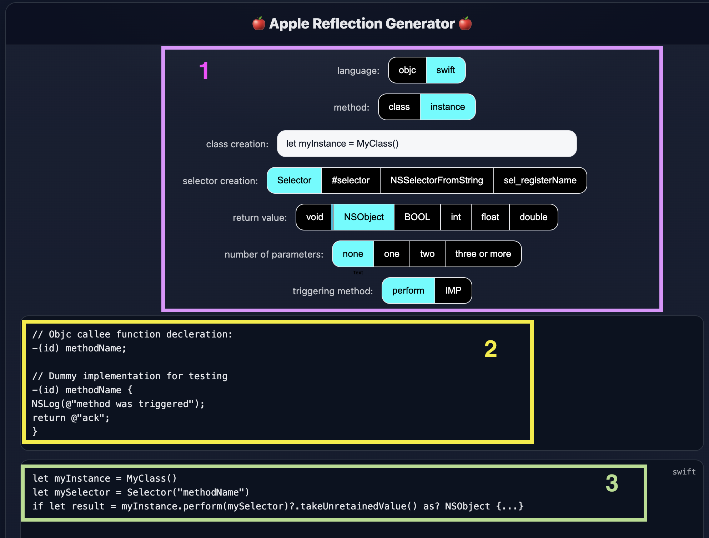

<- Back
Oct 1, 2025
50 ways to call your function
Introduction
Hello,
In this post I will cover a new tool for generating reflection code for ObjC/Swift.
Reflection could be defined as a generic way to trigger methods by their name. If we want to get more technical, it means obtaining the address of the implementation of a method by its name.
While the concept is not unique to ObjC, this is the focus and purpose of this tool.
To be more percise: this blog explores the different ways reflection can be used for triggering ObjC methods.
So, how may ways can there be to trigger just one objc function? apperantly, not as few as one would think, and it turns out that there are more permutations than ways to leave your lover.
This blog post will introduce reflection basics, then move to advance breakdown and options, and will end with instructions on how to use the tool.
If your are not new to ObjC reflection you can skip to the breakdown and read from there.
Note that calling a method with reflection can be done using both ObjC and Swift. The callee, on the other hand, is always an ObjC method, or even an NSObject's child method.
Terminology
Callee - The ObjC method (function) that we want to call using reflection. For example,
a method like
-(id)convertIntToNSNumber:(int)value;
Redlection - The ability to find and call a method using a string that represents its name at runtime. In the example ablve,
We want to be able to call the method by providing the string
"convertIntToNSNumber:" to our reflection code
Selector - a struct (SEL) that represents the name of a method, which for our needs is equivalent to a string.
Class Method - A method that belongs to the class (a static method) that can be called without creating an instance of the class. The decleration
may look like this:
+(id)myFunc; and triggering it directly like so:
id result = [MyClass myFunc];
Instance Method - A method that is called upon an instance of the class. The decleration may
look like this:
-(void)myFunc:(id)arg1; and triggering it directly like so:
[myInstance myFunc:@"myParam"];
Target - The object that the callee belongs to. It may be a class or an instance, depending on the case (class for class method and instance for instance method)
The Simplest Example
Suppose this is our callee and its class
//MyClass.h
@interface MyClass
+(void)myMethod;
@end
// MyClass.m
@implementation MyClass
+(void)myMethod {
NSLog(@"MyMethod was called");
}
Calling the method directly (without reflection) will probably look like this:
[MyClass myMethod];
Calling the method using reflection may look like this:
[MyClass performSelector:@selector(myMethod)];
This may look a bit confusing because we didn't really pass a string, but we still created a selector and triggered the method indirectly.
If we would have wanted to use a real string, this may fit better:
[MyClass performSelector:NSSelectorFromString(@"myMethod")];
Breakdown
If we look at this last example:[MyClass performSelector:NSSelectorFromString(@"myMethod")];we can split it to several parts.
The first partMyClassis the class we want to call (also known as the target). The target can be obtained directly or from a string as well.
There are different ways to obtain class, such as usingNSClassFromStringorobjc_getClass
The second part, which is at the end of the line, creates the selector from a string. There are more ways to create a selector, such as#selectorin Swift,
orsel_registerName, which returns a selector is such already exists.
The final part in this simple example is the way we trigger the selector. Once the target and selector are obtains, there are several ways to trigger it.
In this exampleperformSelector:is used, but other options also exist such as NSInvocation / IMP / objc_msgSend.
Each method has some limitation and different availability depending on several parameters such as:
- The language we are calling from (objc/swift)
- The number of parameters the callee has
- The type of parameters
- The return value
This is actually where the tool gets handy, because it not only generates the desired code, it also sets the limits of your selections
Target
Obtaining the target for a class method can be done from a string. The NSClassFromString
accepts anNSString, and returns aClass.
Alternativlyobjc_getClasscan be called with a C string which returns the same result.
Class myClass = NSClassFromString(@"MyClassName");
// or
Class myClass = objc_getClass("MyClassName");
This createsmyClasswhich can be used as a target,
for example: [myClass performSelector:@selector(myMethod)];
When the callee is an instance method, the target needs to be an instance. Such an instance can be
created directly, or using reflection as well.
Assume the following code:
// The method we want to trigger:
-(NSString*)userUUID;
// the default initializer takes care of populating the UUID, so this should work:
id myInstance = [User new];
NSString* theUUID = [myInstance userUUID];
// but if we want to use reflection:
// Option A:
id myInstance = [NSClassFromString(@"User") performSelector:NSSelectorFromString(@"new")];
NSString* theUUID = [myInstance performSelector:NSSelectorFromString(@"userUUID")];
// Option B:
id myInstance = [objc_getClass("User") performSelector:sel_registerName("new")];
NSString* theUUID = [myInstance performSelector:sel_registerName("userUUID")];
So if we apply the concepts that we learned so far, we know that there is more than one way
for obtaining the class, and more than one way to obtain the selector.
so options A and B can both work, and even interchange the class/selector creation methods.
While both A and B useperformSelector:you probably know by now that this
is just one of several ways to invoke a selector upon a target
Before advancing to triggering, return types and arguments considerations,
note that you can call these ObjC callees from Swift as well:
// consider the same callee
-(NSString*)userUUID;
// calling it from Swift code
let myInstance = User()
let mySelector = Selector("userUUID")
if let result = myInstance.perform(mySelector)?.takeUnretainedValue() as? NString {
print("new user's uuid: \(result)")
}
Generator 101
This last Swift example can serve us as an introductory paragraph for
using the generator.
We select the language as Swift, because we want to call the callee from Swift.
We select the instance method option because our calle start with a '-'.
We select theSelectoroption for creating the selector.
This option does not exist in objc.
We select the return value asNSObject, which is the base class of most NS* classes, including NSString
We select number of parameters as none.
We select the triggering method asperform, which is the Swift equivalent ofperformSelector
The generator UI now looks like the following:

The top part(1)represents the selections mentioned above.
The middle part(2)contains code for testing or illustrating the
implementation which can be called using the generated code(3)
The middle part can also be copied to the relevant locations in the test app (fiftyWays)
The decleration will be added to the header file under the @interface, and the
implementation in the .m file under the @implementation.
The last part(3)contains the generated code that calls this method via reflection.
In the test app this will be placed in the relevant caller,
depending on the language, under thecallmethod
To illustrate:
decleration in the callee header file
implementation in the callee .m file
And calling from Swift
To see the result we can run in the simulator or Xcode's canvas
Advanced
Creating a selector and calling performSelectoris quite straight forward,
but what about more a more complex callee?
performSelectorcomes with two variants:
// objc
- (id)performSelector:(SEL)aSelector;
- (id)performSelector:(SEL)aSelector withObject:(id)object;
- (id)performSelector:(SEL)aSelector withObject:(id)object1 withObject:(id)object2;
//swift
func perform(_ aSelector: Selector!) -> Unmanaged!
func perform(_ aSelector: Selector!, with object: Any!) -> Unmanaged!
func perform(_ aSelector: Selector!, with object1: Any!, with object2: Any!) -> Unmanaged!
These declerations are taken from the NSObject protocols (ObjC and Swift)
This means you can call an objc method that has 2 arguments:
// method decleration
+(BOOL) methodNameWith:(id)firstArg and:(id)secondArg;
// calling it from swift
let myClass = NSClassFromString("ClassName")
let mySelector = Selector("methodNameWith:and:")
if let result = myClass.perform(Selector:mySelector, with:NSString("myFirstArg"), with:NSString("mySecondArg")) as? Bool {...}
When the callee has more than two parameters,
performSelectoris no longer an option.
This is where other APIs can be used:
IMP,for example, can be set with the implementation address (as a pointer), and triggered c-style,
id myClass = NSClassFromString("ClassName");
SEL mySelector = NSSelectorFromString(@"methodNameWith:and:and:");
IMP myImpl = [myClass methodForSelector:mySelector];
int (*myFunc) (id, SEL, id, id, id) = (int (*) (id, SEL, id, id, id))myImpl;
int result = myFunc(myClass, mySelector, @"myFirstArg", @"mySecongArg", @"myThirdArg");
Alternatively,
NSInvocationcan handle multiple arguments, invoke the method, and handle the return value.
id myClass = NSClassFromString("ClassName");
SEL mySelector = NSSelectorFromString(@"methodNameWith:and:and:");
NSMethodSignature *signature = [instance methodSignatureForSelector:mySelector];
NSInvocation *invocation = [NSInvocation invocationWithMethodSignature:signature];
[invocation setSelector:mySelector];
[invocation setTarget:instance];
id firstArg = @"myFirstArg"; // or any other NSObject
id secondArg = @"mySecondArg"; // or any other NSObject
id thirdArg = @"myThirdArg"; // or any other NSObject
[invocation setArgument:&firstArg atIndex:2]; // first arg is at index 2
[invocation setArgument:&secondArg atIndex:3];
[invocation setArgument:&thirdArg atIndex:4];
[invocation invoke];
int result;
[invocation getReturnValue:&result];
objc_msgSendis yet another option for calling the method c-style with the same format.
This method (as well as
IMP) works well for one-liner fans:
id myInstance = [MyClass new];
SEL mySelector = NSSelectorFromString(@"methodNameWith:and:and:");
BOOL result = ((BOOL (*) (id, SEL, float, id, id)) objc_msgSend)(myInstance, mySelector, 0.99, @"mySecondArg", @"myThirdArg");
/* Alternatively if you don't like the one liner approach
BOOL (*myFunc) (id, SEL, float, id, id) = (BOOL (*) (id, SEL, float, id, id))objc_msgSend;
BOOL result = myFunc(myInstance, mySelector, 0.99, @"mySecondArg", @"myThirdArg"); */
Note that
IMPis accessible via Swift, yet the other two are only available when calling from objc.
To conclude the post, I encourage you to look for the relevant API in the header files.
This can help you better understand how everything is declared and can be used in case the generator produces some errors.
In some cases the header files needs to be imported to the project.
Some examples:
Foundation/NSObjCRuntime.h
// objc
FOUNDATION_EXPORT Class _Nullable NSClassFromString(NSString *aClassName);
// swift
public func NSClassFromString(_ aClassName: String) -> AnyClass?
objc/runtime.h
// objc
OBJC_EXPORT Class _Nullable objc_getClass(const char * _Nonnull name)
// swift
public func objc_getClass(_ name: UnsafePointer) -> Any!
Conclusion
Well, as we have seen, there are multiple ways to trigger objc functions with reflection.
This can be done from objC or Swift, and depend on the callee's format.
You may ask yourself why so we need so many ways if using just 2 can work just as well?
This is very true, but still fun, educative and usefull if some of the APIs will change in the future.
Concluding with the links once again:
generator
repo